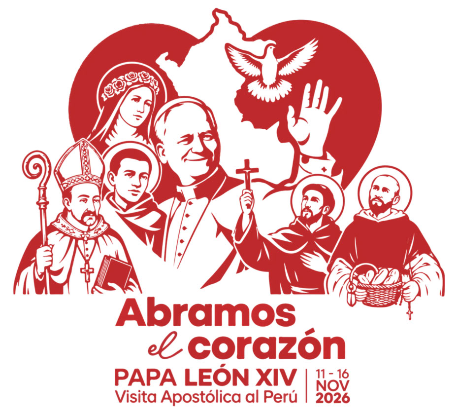
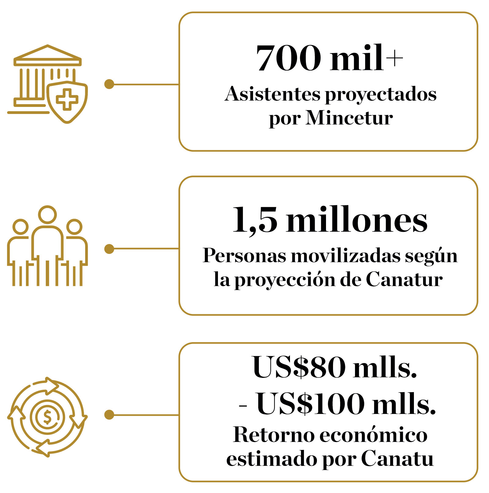

El regreso del Papa al país que también llama hogar.

Logotipo e himno oficial de la visita del Papa León XIV al Perú
No es una visita oficial más. Es el regreso de un hombre que llegó al Perú como misionero, obtuvo la nacionalidad peruana y ahora vuelve como Papa.
Cuando Robert Prevost aterrizó en el norte del Perú en 1985, traía el hábito sencillo de la orden agustina y una misión pastoral sin fecha de retorno. Con los años, aquel sacerdote que recorría las calles de Chiclayo se convirtió en formador, luego en obispo y, finalmente, en un ciudadano más con DNI peruano tras décadas compartiendo la vida diaria de sus comunidades. Su elección como pontífice en 2025 transformó esa biografía local en un acontecimiento global.
Cuatro décadas después de su llegada, vuelve al país con el nombre de León XIV. Su agenda, programada del 11 al 16 de noviembre, trazará un puente entre la memoria y su nuevo rol: recorrerá Lima, Chiclayo, Cusco y Pucallpa. Para el Papa, algunas paradas representarán un regreso a los barrios y templos donde forjó su vocación; para otras regiones, marcarán el primer contacto con un pontífice que conoce de primera mano la realidad del territorio.
Tras las huellas deLEÓN XIV
Recorre sus huellas
Antes de convertirse en Papa, Robert Prevost recorrió el Perú como misionero, formador y obispo. Hoy, su regreso permite conectar los lugares que marcaron su historia con los nuevos destinos de su pontificado. Elige una imagen para descubrir ambos recorridos en el mapa.
Sigue su recorrido
La agenda de León XIV, día por día. Programa oficial publicado por la Santa Sede el 21 de septiembre de 2026. Los horarios corresponden a la hora local del Perú.
La visita no solo movilizará a los fieles. Hoteles, transporte, restaurantes, agencias de viaje, comercio y servicios se preparan para recibir a quienes se desplacen entre las distintas ciudades del recorrido.
Las estimaciones todavía son proyecciones y varían según la institución.
El Ministerio de Comercio Exterior y Turismo estima que podrían movilizarse más de 700 mil asistentes, entre viajeros y residentes locales, según información recogida por El Comercio.
La Cámara Nacional de Turismo eleva la proyección hasta 1,5 millones de personas y calcula que una inversión de entre US 15 millones US 20 millones podría producir un retorno de entre US 80 millones y 100 millones, tomando como referencia experiencias anteriores.

Estas cifras son proyecciones previas a la visita y no representan resultados observados. Las estimaciones proceden de distintas instituciones y no necesariamente utilizan la misma metodología.
Los símbolos de León XIV
Detrás del nombre papal hay objetos con siglos de historia y otros con apenas unos años: una cruz pectoral, un anillo, un escudo, una mitra y hasta los documentos peruanos que también lo identifican.